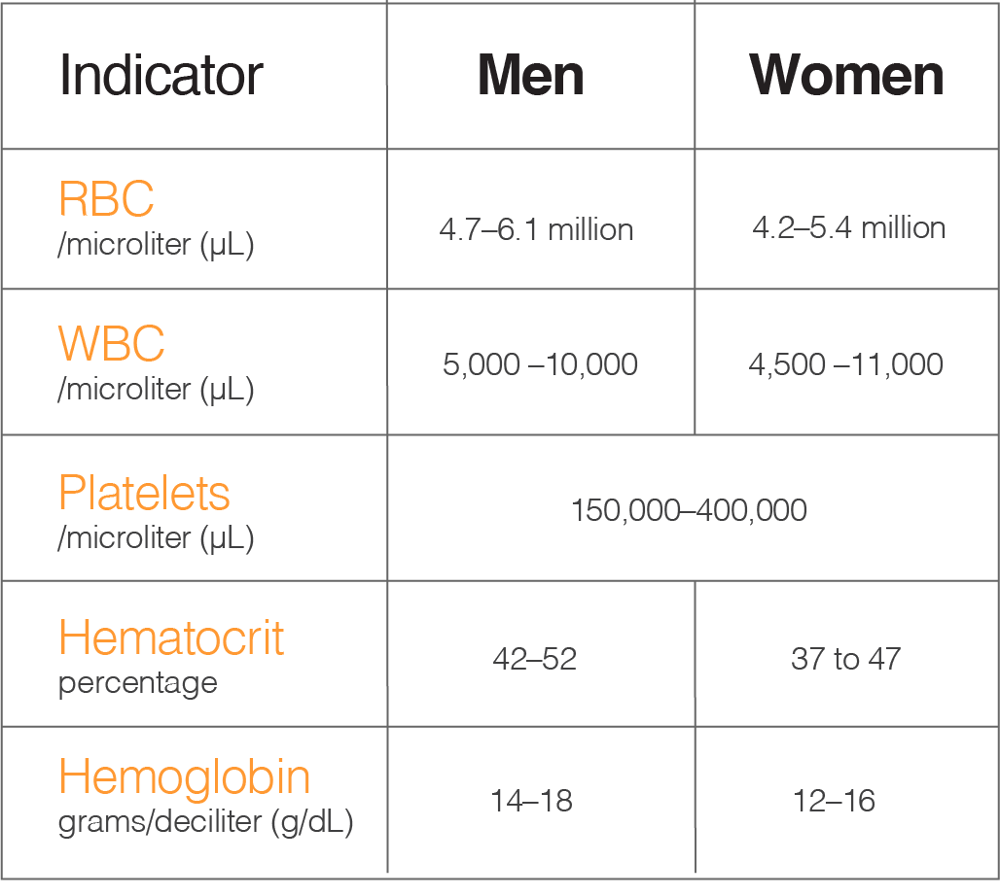
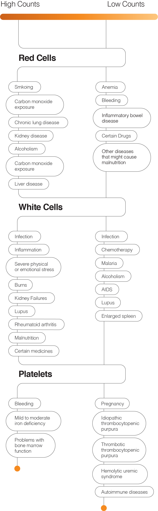

A Complete Blood Count (CBC)
is the number and types of cells circulating in your blood. Your CBC is measured using laboratory tests that require a small blood sample.
Blood is composed of several types of cells:
Red cells, sometimes referred to as erythrocytes, pick up oxygen as blood passes through the lungs and release it to the cells in the body.
White cells, sometimes referred to as leukocytes, help fight bacteria and viruses.
Platelets help your blood clot in response to a cut or a wound.
A CBC also tests hemoglobin and hematocrit:
Hemoglobin is a protein used by red cells to distribute oxygen to other tissues and cells in the body.
Hematocrit refers to the amount of your blood that's occupied by red cells.
Normal blood counts fall within a range established by testing healthy men and women of all ages. The cell counts are compared to those of healthy individuals of similar age and sex. Nearly all lab reports include a "normal" range or high and low "values" to help you understand test results.

Noncancerous Conditions
About 5 percent of healthy people will have test results outside of the "normal" range. If one or more of your blood cell counts is higher or lower than normal, your doctor will try to find out why. Many noncancerous conditions can contribute to low or high blood cell counts, such as those in the chart below.
Source

Blood Chemistry
Blood chemistry tests are blood tests that measure amounts of certain chemicals in a sample of blood. They show how well certain organs are working and can help find abnormalities. Blood chemistry tests may also be called chemistry panels.
There are many types of blood chemistry tests. They measure chemicals including enzymes, electrolytes, fats (also called lipids), hormones, sugars, proteins, vitamins and minerals. Often several chemicals are grouped together and measured at the same time.
Different tests may be used to measure different types of chemicals. The following are some common blood chemistry tests you may have.
Electrolyte panel measures sodium, potassium, chloride, magnesium, phosphate and bicarbonate.
Kidney function tests (also called a renal panel) measure blood urea nitrogen (BUN) and creatinine.
Liver function tests measure alanine aminotransferase (ALT), alkaline phosphatase (ALP), aspartate transaminase (AST), bilirubin, albumin and total protein.
A basic metabolic panel (BMP) includes an electrolyte panel and kidney function tests and also measures glucose and calcium.
A comprehensive metabolic panel (CMP) includes an electrolyte panel, kidney function tests and liver function tests and also measures glucose and calcium.
Source
Enzyme & Protein
Creatine Kinase
A muscle enzyme found in the heart and muscles. Increased CK-MB is seen with heart muscle damage. Increased CK-MM is noted with skeletal muscle injury. Strenuous exercise, weight lifting, surgical procedures, high doses of aspirin and other medications can elevate CK. May increase when using cholesterol-lowering medications.
Myoglobin
Myoglobin is a protein found in certain types of muscle. Elevated myoglobin may indicate muscle injury or inflammation.
Source